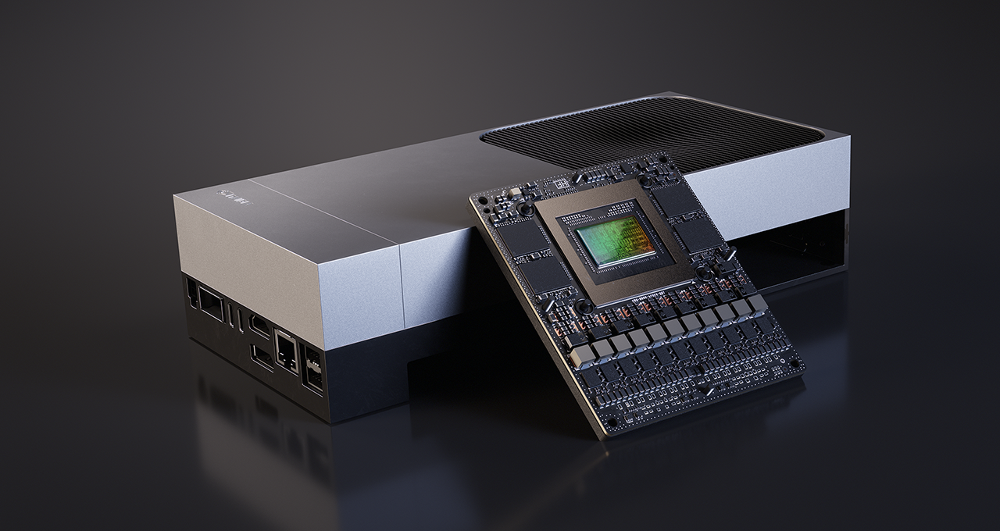
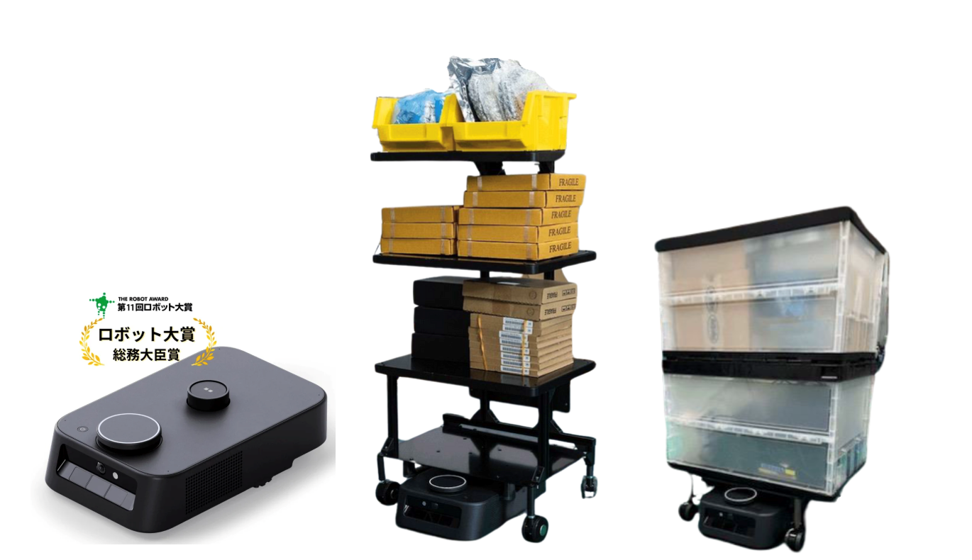
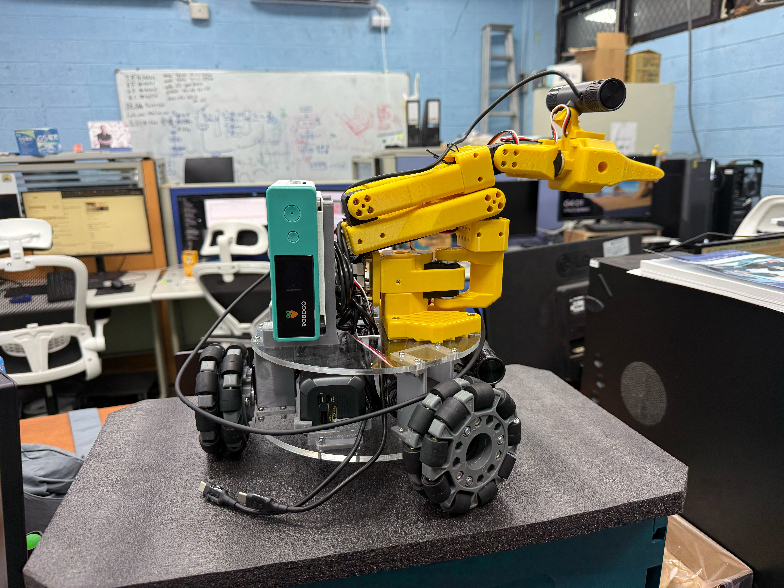
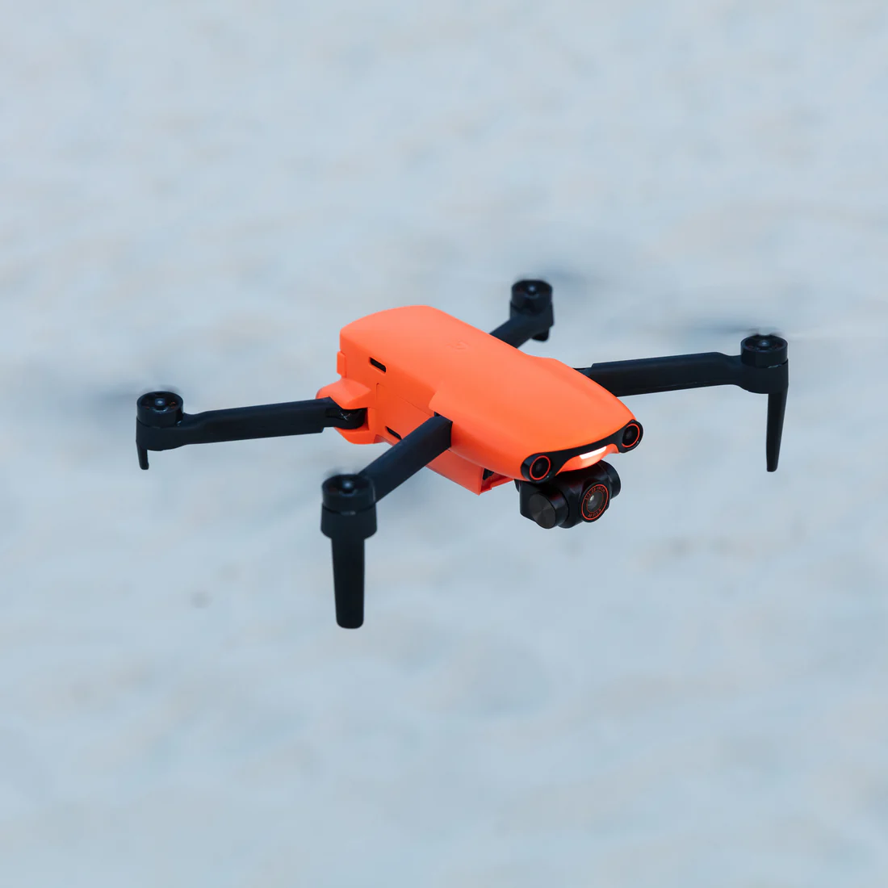
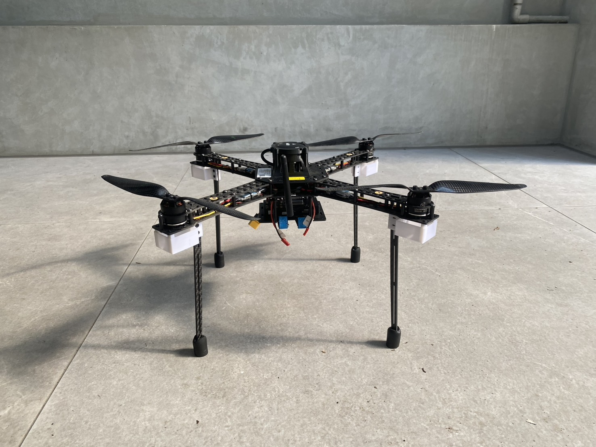

Facilities
設備資源
實驗室設備支援邊緣運算、室內移動平台、飛行載具與機器人系統整合研究。
Equipment Categories
設備分類
從運算平台到移動載具，設備配置對應智慧感測、場域資料蒐集與自主系統驗證需求。

NVIDIA Jetson AGX Thor
邊緣 AI 運算與機器人推論平台。
查看詳細內容
Kachaka Pro
室內 AMR、SLAM、RViz2 與 Isaac Sim 虛實整合平台。
查看詳細內容
小型移動操作平台
移動底盤、機械手臂與視覺感測整合測試。
查看詳細內容
Autel EVO Nano 系列空拍機
空拍影像蒐集、場域紀錄與視覺資料來源。
查看詳細內容
自組四軸無人機平台
飛控測試、感測酬載整合與自主導航研究平台。
查看詳細內容Structure
設備介紹重點
各項設備支援研究主軸、系統整合與實作驗證。